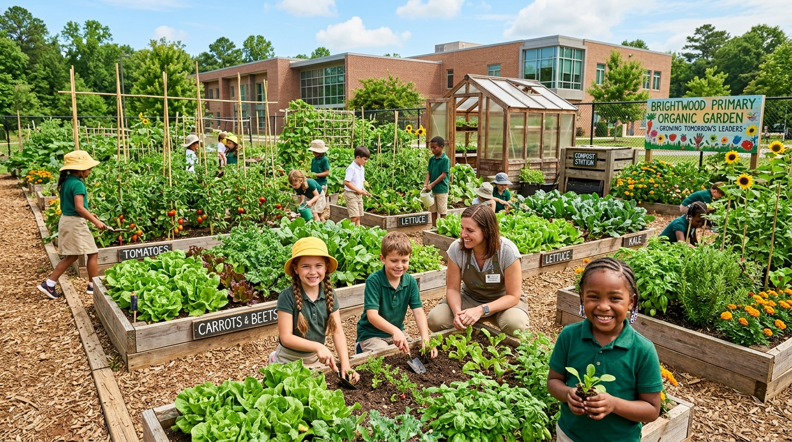
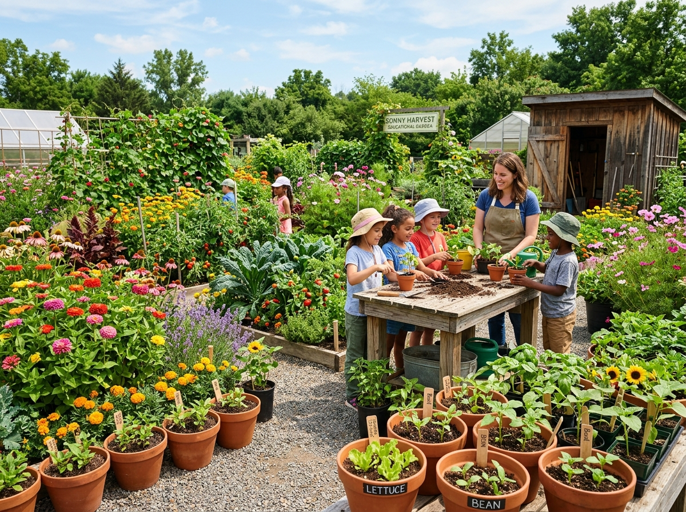
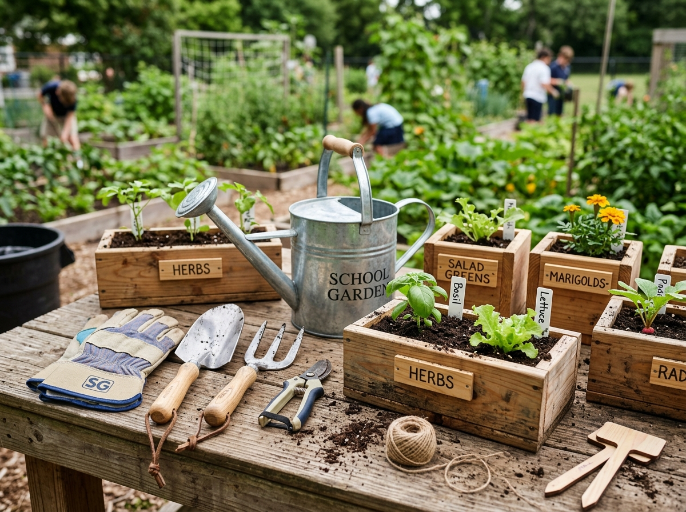
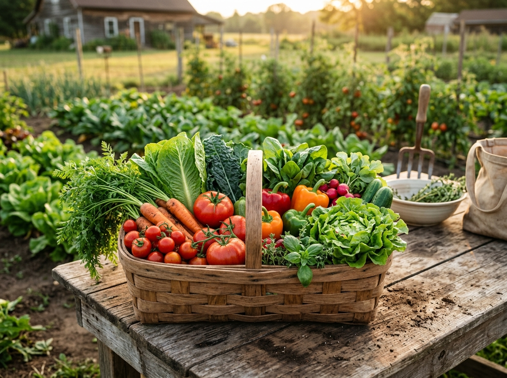
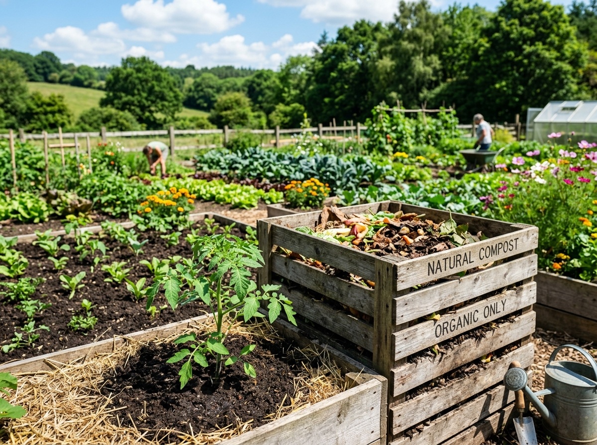

Educación Agropecuaria para Primaria
Portal educativo especializado en la enseñanza agrícola de 3.º a 6.º grado de Educación Básica General del Ministerio de Educación de Panamá.

Áreas de Aprendizaje Agropecuario
Estructura modular del área de Agricultura dentro de la asignatura Tecnologías

Jardín y Especies Vegetales
Cuidado de plantas ornamentales, medicinales, siembra en viveros y aprecio por la diversidad vegetal.

Tecnología Práctica y Funcional
Uso seguro de herramientas agrícolas manuales, preparación de suelos y técnicas de laboratorio escolar.

Producción de Alimentos
Cultivo de hortalizas, verduras y frutas en huertos escolares y familiares para el consumo humano.

Ambiente y Sostenibilidad
Prácticas de agricultura orgánica, elaboración de abono natural, conservación de suelos y agua.
Programa de Agricultura - Tercer Grado
Actualización Curricular 2026 • Fase de Validación
Área 1
Jardín y Especies Vegetales: Reconocimiento de partes de la planta, semilleros y ornamentalismo.
Ver Área 1Área 2
Tecnología Práctica y Funcional: Herramientas básicas de jardín (pala, rastrillo, regadera) y seguridad.
Ver Área 2Área 3
Producción de Alimentos: Siembra de plantas de rápido crecimiento en huertos escolares.
Ver Área 3Área 4
Ambiente y Agricultura Sostenible: Cuidado del entorno, agua de riego y abonos orgánicos sencillos.
Ver Área 4Objetivos de Aprendizaje
- 🌱 Interpreta los conceptos de jardinería y los tipos de jardines con base en su relevancia para reconocer su utilidad en distintos contextos.
- 🌾 Aplica conocimientos básicos de climatología, botánica y edafología para interpretar las condiciones ambientales y biológicas que influyen en el diseño y mantenimiento de jardines y tomar decisiones informadas en proyectos de jardinería.
- 🌻 Manifiesta aprecio por los diferentes tipos de jardines, al participar en actividades que promueven la armonía en el paisaje escolar y familiar, para fomentar el cuidado del medio ambiente y el bienestar colectivo.
Contenidos del Programa
- 🏡 1. La Jardinería: Concepto, Tipos de jardines e Importancia (Económica, Estética, Educacional y Cultural).
- 🔬 2. Ciencias Auxiliares: Botánica, Edafología y Climatología aplicadas a la jardinería.
Tema 1: La Jardinería
1. Concepto de Jardinería
La jardinería es la actividad y arte de cultivar, cuidar y decorar espacios sembrando flores, plantas y árboles para que el entorno luzca estético, ordenado y lleno de vida. En la Educación Básica General, fomenta valores de responsabilidad ambiental, observación del entorno y trabajo en equipo.
2. Tipos de Jardines
3. Importancia de la Jardinería
- 💰 Importancia Económica: Permite ahorrar en compras ornamentales y fomenta iniciativas de autogestión y microemprendimiento.
- 🎨 Importancia Estética: Embellece los hogares, centros educativos y comunidades, mejorando la calidad de vida y el paisaje.
- 📚 Importancia Educacional y Cultural: Enseña el ciclo vital vegetal, promueve valores ecológicos y preserva tradiciones de la flora panameña.
Tema 2: Ciencias Auxiliares de la Jardinería
Para comprender el crecimiento saludable de las plantas en el jardín y en el huerto escolar, la jardinería se apoya en tres disciplinas científicas fundamentales: la Botánica, la Edafología y la Climatología.
Aplicación Práctica en el Huerto Escolar
Los estudiantes observan directamente cómo la calidad del suelo (Edafología), las horas de luz y lluvia (Climatología) y la salud de las hojas y tallos (Botánica) permiten el desarrollo armónico de su jardín.
El Jardín Mágico de la Abuela Sabia
En el centro del pueblo existía un jardín asombroso cuidado por la Abuela Sabia. No era un jardín normal; allí las cosas podían hablar. Un día, un niño llamado Leo entró y escuchó a una hermosa Orquídea decir: "Mírame, Leo, mis colores traen alegría a todos, pero también la abuela vende mis flores en el mercado para comprar sus alimentos".
De pronto, desde el suelo, asomó una Lombriz con gafas que le dijo: "¡Eh, tú! Yo soy la experta en Edafología. Mi trabajo es mezclar el agua y el aire en esta tierra para que las raíces de la Orquídea tengan comida".
Leo estaba fascinado, pero el cielo se oscureció y una Nube sopló una brisa suave. "Yo represento a la Climatología", tronó la Nube. "Si no envío mi lluvia hoy y dejo que el sol brille mañana, la Botánica de la que tanto presume esa Orquídea no serviría de nada, ¡porque no podría crecer!".
Leo sonrió al comprender que el jardín era un gran equipo. Sin la tierra perfecta, sin el clima adecuado y sin el conocimiento de cómo crecen las plantas, la magia de la jardinería desaparecería por completo.
Cuestionario de Comprensión Lectora
Experimento de Campo: Textura y Componentes del Suelo
1. Descripción de la Actividad
¿Alguna vez te has preguntado qué hay realmente dentro del suelo donde crecen nuestras plantas? En este experimento de campo, nos convertiremos en científicos del suelo (edafólogos). Recogeremos una muestra de la tierra de nuestro huerto escolar o jardín, la mezclaremos con agua en un frasco transparente y dejaremos que la gravedad nos revele sus secretos separados en capas: arena, limo, arcilla y materia orgánica.
2. Materiales Necesarios
3. Pasos para el Desarrollo del Experimento
Ve al huerto escolar o jardín y retira con cuidado las hojas secas de la superficie. Toma tierra limpia (evita piedras muy grandes o raíces gruesas) y llena el frasco transparente hasta un tercio (1/3) de su capacidad.
Agrega agua al frasco dejando un espacio libre arriba (aproximadamente a un 85-90% de su capacidad total). Antes de agitar, observa con mucha atención la superficie del agua.
¿Ves burbujas subiendo? ¡Eso que sale es el aire que estaba atrapado entre los poros del suelo!
Cierra muy bien la tapa del frasco. Agítalo con fuerza durante 1 o 2 minutos completos para que toda la tierra se disuelva bien en el agua y los componentes se separen.
Coloca el frasco en una superficie plana y firme donde nadie lo mueva. Observa lo que pasa en los primeros 30 segundos (verás caer la arena pesada). Deja reposar el frasco durante 24 horas para que las partículas más finas terminen de asentarse.
4. Guía Visual: ¿Qué estamos viendo en el frasco?
Cuando el agua se aclare un poco, notarás que el suelo se dividió en distintas capas de abajo hacia arriba:
5. Ficha de Registro y Resultados
Medición de las Capas (Usa tu regla):
6. Preguntas de Análisis y Conclusión
"El suelo no es solo una cosa sólida; está compuesto por partes minerales como la y la arcilla, por organismos vivos o muertos llamados , y además contiene espacios llenos de agua y ."
Glosario de Terminología
Consulta los conceptos botánicos, edafológicos y climáticos clave desarrollados:
Arte, técnica y práctica de cultivar, cuidar y mantener plantas ornamentales, medicinales o comestibles en espacios abiertos o recipientes para el embellecimiento y bienestar.
Ciencia auxiliar de la biología dedicada al estudio integral de las plantas, sus estructuras (raíces, tallos, hojas, flores), clasificación y funciones vitales.
Ciencia que analiza la composición, textura, formación y conservación de los suelos como el soporte físico y fuente de agua, aire y nutrientes para las plantas.
Estudio de las condiciones del clima y el tiempo atmosférico (temperatura, horas de luz solar, lluvias y vientos) y su influencia en los momentos de siembra y riego.
Conjunto de restos vegetales y animales descompuestos que enriquecen el suelo, aumentan la retención de agua y proporcionan abono natural.
Proceso físico por el cual las partículas del suelo suspendidas en agua se separan en capas (arena al fondo, limo y arcilla al medio, materia orgánica flotando) según su peso.
Especie vegetal cultivada por sus flores, follaje o aroma vistoso, utilizada para decorar jardines, parques, viviendas y arreglos florales.
Planta cuyas sustancias activas poseen propiedades terapéuticas o curativas (ej. albahaca, menta, sábila, manzanilla) usadas en la medicina tradicional y natural.
Partículas minerales de mayor tamaño en el suelo (0.05 a 2 mm). Aportan excelente aireación y drenaje rápido al agua, sintiéndose rasposas al tacto.
Partículas minerales de tamaño intermedio (0.002 a 0.05 mm), de textura suave similar al talco. Retienen agua y nutrientes de forma equilibrada.
Partículas minerales diminutas (menores a 0.002 mm). Al mojarse forman una masa plástica y pegajosa. Retienen agua y nutrientes con mucha fuerza.
Especie de lombriz roja muy apreciada en la agricultura por transformarse en una máquina de digestión que convierte restos orgánicos en humus rico en nutrientes para las plantas.
Sopa de Letras: Vocabulario de Jardinería y Suelo
Encuentra las 10 palabras ocultas en la cuadrícula. Haz clic en las letras para seleccionar la palabra completa.
Palabras a Buscar:
0 / 10Objetivos de Aprendizaje
Identificar las herramientas de jardinería y sus usos para reconocer su importancia en el cuidado de las plantas mediante actividades prácticas y guiadas en el aula o el entorno escolar.
Contenidos del Programa
Herramientas de Jardinería
- 🔹 Tema 1: Herramientas de Jardinería e Importancia en su Cuidado
- 🔹 Tema 2: Clasificación y Uso Funcional de las Herramientas (Tijera de podar, Escobilla, Palón, Regadera, Aspersor, Bomba manual, Trasplantador, Manguera, Navaja de jardinería)
Concepto de Herramientas de Jardinería
Las herramientas de jardinería son instrumentos manuales y utensilios diseñados especialmente para facilitar las tareas de labranza, siembra, poda, riego y acondicionamiento del suelo en el huerto escolar o jardín.
Importancia en el Cuidado de las Herramientas de Jardinería
El mantenimiento adecuado y el cuidado responsable de las herramientas de jardinería es fundamental para garantizar su buen funcionamiento, proteger la salud de los cultivos y asegurar la protección física de los estudiantes en el campo escolar.
Limpiar la tierra húmeda y secar las herramientas de metal evita la oxidación y corrosión, haciendo que duren muchos años en óptimas condiciones.
Desinfectar las hojas de tijeras y navajas después de usarlas evita transmitir hongos, bacterias y virus de una planta enferma a una sana.
Herramientas con mangos firmes y sin astillas evitan cortaduras o lesiones. El material oxidado o mello es peligroso en manos de los niños.
Conservar el equipo agrícola reduce el gasto en la compra constante de sustitutos, permitiendo invertir el presupuesto en semillas e insumos.
Clasificación y Uso de Herramientas de Jardinería
1. Corte y Poda
- ✂️ Tijera de podar: Diseñada para recortar ramas secas, retirar flores marchitas y dar forma a los arbustos.
- 🔪 Navaja de jardinería: Empleada para realizar cortes precisos en tallos delgados y preparar esquejes o propagación vegetal.
2. Excavación y Trasplante
- ⛏️ Palón / Pala de mano: Utilizado para abrir hoyos de siembra, aflojar tierra dura y mezclar abonos.
- 🪴 Trasplantador: Pala estrecha con marcas de profundidad para extraer plántulas del semillero sin romper sus raíces.
3. Riego y Aplicación
- 💧 Regadera: Distribuye el agua suavemente en forma de lluvia fina sobre plántulas delicadas.
- 🚰 Manguera: Conduce abundante agua desde la toma principal hacia parcelas o jardines amplios.
- 💦 Aspersor: Dispositivo para pulverizar agua sobre grandes áreas de césped o plantas.
- 💨 Bomba manual: Utilizada para aplicar soluciones nutritivas foliares o repelentes orgánicos.
4. Limpieza y Nivelación
- 🧹 Escobilla / Rastrillo de jardín: Reúne hojas secas, pequeñas ramas y nivela la capa de tierra de la superficie.
Normas de Seguridad y Mantenimiento
- ⚠️ Transportar las herramientas con las puntas filosas apuntando hacia el suelo.
- 🧼 Limpiar con agua y secar las herramientas después de cada uso para evitar la oxidación.
- 📦 Guardar las herramientas ordenadamente en el depósito escolar en sus soportes correspondientes.
Taller: Identificación y Clasificación de Herramientas
Relaciona cada herramienta con su función principal seleccionando la opción correcta:
Glosario de Terminología
Consulta los conceptos tecnológicos y de herramientas clave desarrollados:
Sopa de Letras: Herramientas y Tecnología Agrícola
Encuentra las 10 palabras ocultas sobre las herramientas, seguridad y labores del huerto escolar:
Palabras a Buscar:
0 / 10Objetivos de Aprendizaje
- 🎯 Distinguir el huerto escolar como fuente de alimentos saludables para valorar su aporte a la nutrición y la salud a través de actividades participativas en el entorno escolar.
- 🎯 Comparar los métodos tradicionales y modernos de producción agrícola para valorar sus aportes en la obtención de alimentos mediante la observación y análisis de prácticas agrícolas escolares.
- 🎯 Desarrollar conciencia y respeto por el trabajo agrícola escolar como medio para promover una alimentación saludable y sostenible mediante la participación en actividades del huerto escolar.
Contenidos del Programa
Producción de Alimentos
- 🔹 Tema 1: El Huerto Escolar, Salud y Nutrición (Concepto, Importancia, Salud, Nutrición y Valor Nutricional)
- 🔹 Tema 2: Métodos de Producción Agrícola (Concepto, Importancia y Tipos de Métodos: Tradicionales y Modernos)
Concepto de Huerto Escolar
El huerto escolar es un espacio pedagógico y área de cultivo dentro de la escuela donde los estudiantes, guiados por los docentes, siembran, cuidan y cosechan hortalizas, verduras, frutas y granos básicos destinados al consumo y aprendizaje comunitario.
Importancia en la Salud, Nutrición y Valor Nutricional
La producción de alimentos en el huerto escolar garantiza la obtención de productos vegetales frescos, limpios y libres de químicos tóxicos, fortaleciendo directamente la salud del estudiante.
Verduras como el tomate, lechuga, zuchini y culantro aportan vitaminas A, C y hierro esencial para el crecimiento físico e intelectual.
Al participar directamente en el cultivo, los estudiantes muestran mayor interés en consumir vegetales y reducir el consumo de comida chatarra.
Asegura el acceso a alimentos nutritivos y de calidad para complementar el comedor escolar y la nutrición de los comedores estudiantiles.
Conecta los contenidos teóricos de ciencias de la salud con la experiencia vivencial de sembrar y cosechar con sus propias manos.
Concepto e Importancia de los Métodos de Producción
Los métodos de producción agrícola son los conjuntos de técnicas, procesos, herramientas y conocimientos empleados por el ser humano para preparar la tierra, sembrar, cuidar y cosechar los productos que garantizan la alimentación.
Tipos de Métodos de Producción Agrícola
Métodos Tradicionales
Técnicas ancestrales transmitidas de generación en generación que utilizan el trabajo manual y recursos naturales del entorno.
- 🔹 Labranza manual con azadón, coa y palón.
- 🔹 Abonos orgánicos (compost, gallinaza y restos vegetales).
- 🔹 Control biológico y rotación manual de cultivos.
- 🔹 Riego con regadera o canales de tierra por gravedad.
- 🌱 Aporte: Preserva el patrimonio cultural y protege el equilibrio ecológico del suelo.
Métodos Modernos
Sistemas avanzados que incorporan maquinaria, tecnología, automatización e ingeniería agronómica de precisión.
- 🔹 Maquinaria agrícola (tractores, sembradoras).
- 🔹 Sistemas de riego por goteo y automatizado.
- 🔹 Cultivo protegido en invernaderos e hidroponía.
- 🔹 Uso de biotecnología y monitoreo por sensores.
- ⚡ Aporte: Permite obtener mayores cosechas en menor tiempo para abastecer a la población.
Taller: El Huerto Escolar y los Métodos de Producción
Demuestra tus conocimientos seleccionando la respuesta correcta en cada pregunta:
Glosario de Terminología
Consulta los conceptos sobre producción alimentaria, nutrición y métodos agrícolas desarrollados:
Sopa de Letras: Producción de Alimentos y Nutrición
Encuentra las 10 palabras ocultas sobre la cosecha, salud, nutrición y métodos agrícolas:
Palabras a Buscar:
0 / 10Objetivos de Aprendizaje
- 🎯 Aplica prácticas agrícolas sostenibles que protejan la flora y la fauna para contribuir al cuidado del medio ambiente mediante actividades dirigidas en el huerto escolar.
- 🎯 Relaciona los componentes del suelo para explicar su interacción en el mantenimiento de la fertilidad y la vida agrícola realizando actividades experimentales y la observación directa en el entorno escolar.
- 🎯 Demuestra respeto por la flora, fauna y los componentes del suelo para contribuir a la conservación del medio ambiente durante las actividades escolares y comunitarias.
Contenidos del Programa
Ambiente y Agricultura Sostenible
- 🔹 Tema 1: Agricultura Agro Sostenible y Cuidados del Medio Ambiente (Concepto y Cuidados de la Flora y Fauna)
- 🔹 Tema 2: El Suelo y sus Componentes (Concepto, Importancia y Componentes del Suelo: Agua, Aire y Seres Vivos)
Concepto de Agricultura Agro Sostenible
La agricultura agro sostenible es el modelo de producción agrícola que busca cosechar alimentos sanos cuidando al mismo tiempo la tierra, los ríos, el aire y la biodiversidad, garantizando que las generaciones futuras dispongan de suelo fértil y agua limpia.
Cuidados del Medio Ambiente: Flora y Fauna Local
El huerto escolar sostenible actúa como un refugio de biodiversidad donde la vegetación y los animales se protegen mutuamente.
Conservar árboles autóctonos, cercas vivas y plantas ornamentales reduce la erosión provocada por el viento y ofrece sombra natural.
Proteger polinizadores como abejas, mariposas y colibríes, así como mariquitas que devoran plagas dañinas sin usar tóxicos.
Reemplazar plaguicidas sintéticos por repelentes naturales elaborados con ajo, nim o ceniza que no contaminan las fuentes de agua.
Promover el trabajo en equipo, las jornadas de limpieza y el reciclaje orgánico como valores ciudadanos del estudiante.
Concepto e Importancia del Suelo
El suelo es la capa superficial viva de la corteza terrestre formada por minerales, agua, aire y materia orgánica. Es la base fundamental para el anclaje de las plantas, la filtración del agua y la producción de todos los alimentos.
Componentes Fundamentales del Suelo
1. Agua
Ocupa los poros del suelo y disuelve los minerales esenciales para que las raíces puedan absorbérselos e hidratar a la planta.
2. Aire
Suministra oxígeno vital para la respiración de las raíces y de los microorganismos benéficos del subsuelo.
3. Seres Vivos
Lombrices, bacterias y hongos que descomponen hojas y restos orgánicos formando el humus rico y fértil.
Taller: Agricultura Sostenible y Conservación del Suelo
Demuestra tus conocimientos seleccionando la respuesta correcta en cada pregunta:
Glosario de Terminología
Consulta los conceptos de sostenibilidad, suelos y cuidado ambiental desarrollados:
Sopa de Letras: Ambiente y Agricultura Sostenible
Encuentra las 10 palabras ocultas sobre la conservación ambiental, el suelo y la flora/fauna:
Palabras a Buscar:
0 / 10Programa de Agricultura - Cuarto Grado
Actualización Curricular 2026 • Fase de Validación
Área 1
Jardín y Especies Vegetales: Propagación asexual, estacas y diseño del jardín escolar.
Ver Área 1Área 2
Tecnología Práctica y Funcional: Preparación de sustratos, eras de siembra y herramientas de labranza.
Ver Área 2Área 3
Producción de Alimentos: Siembra de leguminosas, raíces y tubérculos en proyectos familiares.
Ver Área 3Área 4
Ambiente y Agricultura Sostenible: Elaboración de bocashi, biol y control bio-ecológico de plagas.
Ver Área 4Objetivos de Aprendizaje
- 🎯 Clasifica los tipos de jardines ornamentales segun las caracteristicas de flores y follaje para aplicar principios de dibujo y biodiversidad en proyectos interdisciplinarios con Ciencia y Arte, a partir de la observacion real en los jardines del entorno.
- 🎯 Clasifica los habitos de crecimiento de las plantas (erguidas, trepadoras, colgantes y rastreras) para reconocer como se adaptan a su entorno y como pueden usarse en jardines o huertos escolares, con apoyo de observaciones de dibujo en el aula o jardines para explicaciones simples vinculadas a la Educacion Ambiental.
- 🎯 Valora la importancia de los jardines ornamentales para el embellecimiento y bienestar del entorno escolar y familiar, expresando actitudes de respeto, cuidado y aprecio por la naturaleza y el trabajo en equipo, a partir de la participacion en actividades escolares de jardineria.
Contenidos del Programa
El Jardin y sus Especies Vegetales
- 🔹 Tema 1: Jardines Ornamentales (Concepto, Tipos: Con Flores y Con Follaje, Caracteristicas e Importancia Estetica)
- 🔹 Tema 2: Habitos de Crecimiento de las Plantas (Plantas Erguidas, Trepadoras, Colgantes y Rastreras)
Concepto de Jardin Ornamental
Un jardin ornamental es un espacio planificado y cultivado con especies vegetales seleccionadas por su belleza estetica, colores, aromas y texturas. Su objetivo principal es embellecer el entorno escolar y comunitario, generando bienestar emocional y refugio para polinizadores.
Tipos de Plantas Ornamentales
1. Plantas con Flores
Especies que destacan por la vistosidad, colorido y aroma de sus estructuras florales.
- 🌸 Ejemplos: Rosales, orquideas, begonias, veraneras y petunias.
- 🐝 Atraen mariquitas, mariposas y colibri polinizadores.
- 🎨 Aportan contraste de color a los pasillos y patios escolares.
2. Plantas de Follaje
Especies apreciadas por el atractivo relieve, forma, brillo y matizado de sus hojas verdes o variegadas.
- 🍃 Ejemplos: Helechos, crotos, calateas, diefenbaquias y filodendros.
- 🛡️ Gran resistencia a condiciones de sombra parcial e interior.
- 💨 Purifican el aire del aula y regulan la humedad ambiental.
Clasificacion segun los Habitos de Crecimiento
El habito de crecimiento es el comportamiento de desarrollo espacial del tallo de una planta segun su firmeza y adaptacion al entorno. Se clasifican en 4 grupos fundamentales:
Poseen tallos rigidos y firmes que crecen erguidos hacia arriba de forma independiente. (Ejemplos: Rosales, ixoras, arbustos ornamentales).
Tallos flexibles provistos de zarcillos o raices adventicias que se sujetan a paredes, mallas y pergolados. (Ejemplos: Veraneras, hiedras, maracuya).
Tallos suaves y flexibles que caen libremente desde canastas o maceteros elevados. (Ejemplos: Helecho nido, amor de hombre, petunias).
Se extienden de forma horizontal sobre la superficie del terreno formando alfombras naturales contra la erosion. (Ejemplos: Grama, mani forrajero, verdolaga).
Taller: Jardines y Habitos de Crecimiento
Demuestra tus conocimientos seleccionando la respuesta correcta en cada pregunta:
Glosario de Terminologia
Consulta los conceptos de jardines ornamentales y habitos de crecimiento desarrollados:
Sopa de Letras: Jardines y Habitos de Crecimiento
Encuentra las 10 palabras ocultas sobre plantas ornamentales y sus formas de crecimiento:
Palabras a Buscar:
0 / 10Objetivos de Aprendizaje
- 🎯 Clasifica herramientas manuales agrícolas, segun su uso y funcion, mediante la observacion y manipulacion supervisada, para promover el aprendizaje de su aplicacion en actividades del huerto escolar.
- 🎯 Demuestra tecnicas correctas de agarre y uso de herramientas manuales para realizar actividades practicas de forma segura, respetando normas basicas de seguridad y trabajo colaborativo.
- 🎯 Valora el uso de herramientas manuales en la agricultura escolar, expresando actitudes de responsabilidad, respeto y disposicion para el trabajo en equipo, durante actividades practicas del huerto escolar.
Contenidos del Programa
Tecnologia Practica y Funcional
- 🔹 Tema 1: Herramientas Manuales Agricolas (Tipos: Machete, Hacha, Azadon, Piqueta, Rastrillo, Azada, Pala y Coa)
- 🔹 Tema 2: Agarre Correcto, Manipulacion Supervisada y Seguridad Agricola (Tecnicas de sujecion, normas de seguridad y trabajo en equipo)
Tipos y Usos de Herramientas Manuales (Cuarto Grado)
Las herramientas manuales agricolas son instrumentos de trabajo movilizados por la fuerza muscular del estudiante o agricultor. El programa de cuarto grado contempla 8 herramientas esenciales:
Herramienta de hoja larga de acero ideal para el chapeo de rastrojos, corte de malezas altas y despeje del terreno escolar.
Herramienta de corte pesado utilizada para desramado, corte de madera dura y confeccion de tutores o postes para el huerto.
Herramienta de hoja grande perpendicular al mango empleada para picar tierra dura, desterronar y voltear el suelo.
Herramienta combinada con boca picadora y pala para aflojar suelos pedregosos y romper capas compactadas.
Cabezal dentado de hierro que sirve para nivelar la superficie de las eras de siembra y juntar malezas secas.
Herramienta mas ligera que el azadon utilizada para aporcar cultivos, eliminar hierbas malas y abrir surcos de siembra.
Hoja concava de acero para excavar pozos de siembra, cargar abono organico y trasladar sustratos al compostero.
Palo aguzado o con punta reforzada para abrir hoyos pequeños de siembra directa de maiz, frijol y granos.
Técnicas de Agarre Correcto y Normas de Seguridad
Para evitar accidentes laborales y garantizar la eficiencia en el campo, el estudiante debe aplicar el agarre ergonomico y respetar las reglas de oro de seguridad:
✋ Tecnica de Sujecion y Equilibrio Corporal
- 🔹 Empuñar las herramientas de mango largo (azadon, pala, rastrillo, hacha) con ambas manos firmes.
- 🔹 Colocar la mano dominante cerca del extremo posterior del mango para dar palanca y control.
- 🔹 Mantener la espalda erguida y doblar levemente las rodillas para evitar lesiones lumbares.
🦺 Normas de Seguridad Escolar en el Campo
- 📏 Mantener una distancia minima de 2 metros entre compañeros al trabajar con azadon o machete.
- 🛑 Transportar las herramientas filosas apuntando hacia abajo y nunca correr con ellas.
- 🧼 Limpiar los filos de barro, secar los mangos de madera y guardarlos en el soporte del deposito.
Taller: Herramientas Manuales y Seguridad en el Campo
Demuestra tus conocimientos seleccionando la respuesta correcta en cada pregunta:
Glosario de Terminologia
Consulta los conceptos sobre herramientas manuales y seguridad agricola desarrollados:
Sopa de Letras: Herramientas Manuales y Seguridad
Encuentra las 10 palabras ocultas sobre herramientas de labranza y normas de seguridad:
Palabras a Buscar:
0 / 10Objetivos de Aprendizaje
- 🎯 Identifica los beneficios del huerto escolar, distinguiendo sus aportes en lo economico, nutritivo y comunitario, para reconocer su importancia en el entorno educativo, mediante la observacion y reflexion guiada de experiencias escolares.
- 🎯 Comprende los metodos tradicionales de produccion agricola, para valorar las practicas culturales y su relacion con el entorno, mediante actividades de observacion.
- 🎯 Aprecia el aporte del huerto escolar y la produccion agricola a la comunidad educativa, para fomentar actitudes de responsabilidad y colaboracion, durante actividades que promuevan su uso y conservacion.
Contenidos del Programa
Produccion de Alimentos para Consumo Humano
- 🔹 Tema 1: Beneficios del Huerto Escolar (Concepto, Importancia y Categorias: Economicos, Nutritivos y Comunitarios)
- 🔹 Tema 2: Metodos Tradicionales de Produccion Agricola (Concepto, Tecnica de Corta y Quema, Siembra a Chuzo/Coa)
Concepto e Importancia del Huerto Escolar
El huerto escolar en cuarto grado es un laboratorio vivo y autosostenible donde los estudiantes aplican competencias cientificas, matematicas y agricolas para la siembra de alimentos nutritivos de ciclo corto y mediano.
Categorias de Beneficios del Huerto Escolar
1. Beneficios Economicos
Disminuye los costos del comedor escolar y fomenta el ahorro familiar al producir hortalizas frescas en lugar de comprarlas.
2. Beneficios Nutritivos
Garantiza el suministro de alimentos organicos libres de agrotoxicos, ricos en vitaminas A, C, hierro y minerales esenciales.
3. Beneficios Comunitarios
Une a docentes, estudiantes y padres de familia en tareas colaborativas de siembra, riego y cosecha compartida.
Concepto y Tecnicas Tradicionales de Cultivo
Los metodos tradicionales de produccion son conocimientos y practicas agricolas heredadas de los antepasados panameños para cultivar la tierra aprovechando los recursos naturales de forma manual:
🪓 1. Tecnica de Corta y Quema (Roza)
Metodo donde se desmaleza la vegetacion del terreno y se quema de forma muy controlada.
- 🔹 Las cenizas obtenidas aportan minerales como potasio al suelo inicial.
- 🔹 Requiere supervision y analisis de impacto ambiental para no dañar la biodiversidad.
🪵 2. Siembra a Chuzo (Coa)
Tecnica manual sin arar ni mover en profundidad la capa superficial del terreno.
- 🔹 El agricultor entierra el chuzo de madera perforando un pequeño hoyo.
- 🔹 Coloca de 2 a 3 semillas de maiz o frijol y tapa suavemente con el pie.
Taller: Beneficios del Huerto y Métodos Tradicionales
Demuestra tus conocimientos seleccionando la respuesta correcta en cada pregunta:
Glosario de Terminologia
Consulta los conceptos de produccion alimentaria y metodos tradicionales desarrollados:
Sopa de Letras: Beneficios y Cultivos Tradicionales
Encuentra las 10 palabras ocultas sobre los aportes del huerto y la agricultura ancestral:
Palabras a Buscar:
0 / 10Objetivos de Aprendizaje
- 🎯 Aplica tecnicas de conservacion de suelos y agua mediante la implementacion de barreras vivas, muertas y abonos organicos para prevenir la erosion y mantener la fertilidad del suelo escolar.
- 🎯 Promueve practicas agroecologicas sustentables sensibilizando a la comunidad escolar sobre el reciclaje organico (compostaje y vermicompostaje) y la reforestacion protectora.
- 🎯 Demuestra valores de compromiso ambiental y conservacion de la biodiversidad agricola respetando la flora y fauna nativa panameña.
Contenidos del Programa
Ambiente y Agricultura Sostenible
- 🔹 Tema 1: Conservacion de Suelos y Agua (Concepto, Barreras Vivas de limoncillo/vetiver, Barreras Muertas de piedras/troncos y Mulch/Mantillo)
- 🔹 Tema 2: Manejo de Residuos Organicos y Compostaje Escolar (Elaboracion de Compostera por Capas y Vermicompostaje/Lombricultura)
Técnicas de Conservación de Suelos y Agua
La conservacion de suelos y agua abarca el conjunto de practicas destinadas a mitigar la erosion hidrica causada por las fuertes lluvias panameñas y retener la humedad natural en las eras de cultivo:
Hileras tupidas de plantas con raices profundas (*vetiver, limoncillo, piña, te de limon*) sembradas a curva de nivel que frenan la escorrentia y filtran el agua.
Muros alineados con materiales inanimados del terreno (*piedras, troncos secos, bambu*) colocados en contrapendiente para retener el sedimento fertil.
Capa protectora de hojas secas, paja o cascarilla sobre las eras que evita la evaporacion acelerada del agua y protege la microfauna del suelo.
Compostaje Escolar y Vermicompostaje
El compostaje es la tecnica agroecologica de reciclar los desechos vegetales de la cocina escolar y del jardin para transformarlos en abono organico de alta calidad:
🌱 Proceso del Compostero por Capas
- 🟤 Capa Seca (Materia Marron): Hojas secas, paja o aserrin ricos en Carbono.
- 🟢 Capa Verde (Materia Viva): Restos de frutas, cascaras y malezas ricas en Nitrogeno.
- 🟤 Capa de Tierra y Riego: Se cubre con tierra y se mantiene una humedad equilibrada (60%).
🪱 Vermicompostaje (Lombricultura)
Uso de la lombriz roja californiana (Eisenia foetida) para acelerar la descomposicion.
- 🔹 Produce humus liquido (biol) y solido altamente concentrado en nutrientes.
- 🔹 Regenera la estructura microbiologica del suelo de manera 100% natural.
Taller: Conservación de Suelos y Reciclaje Orgánico
Demuestra tus conocimientos seleccionando la respuesta correcta en cada pregunta:
Glosario de Terminologia
Consulta los conceptos de conservacion ambiental y abonos organicos desarrollados:
Sopa de Letras: Conservación y Lombricultura
Encuentra las 10 palabras ocultas sobre agroecologia y proteccion ambiental:
Palabras a Buscar:
0 / 10Programa de Agricultura - Quinto Grado
Actualización Curricular 2026 • Fase de Validación
Área 1
Jardín y Especies Vegetales: Diseño paisajístico escolar y cultivo de plantas aromáticas.
Ver Área 1Área 2
Tecnología Práctica y Funcional: Sistemas de riego por goteo artesanales e instrumental agrícola.
Ver Área 2Área 3
Producción de Alimentos: Cultivos hidropónicos sencillos y producción agroecológica familiar.
Ver Área 3Área 4
Ambiente y Agricultura Sostenible: Lombricultura, manejo integrado de plagas y agrodiversidad.
Ver Área 4Objetivos de Aprendizaje
Diseñar arreglos florales y paisajísticos sostenibles utilizando flora autóctona y plantas aromáticas repelentes.
Contenidos del Programa (Quinto Grado)
- 🌿 Plantas aromáticas y medicinales (albahaca, romero, menta).
- 🎨 Principios de paisajismo ecológico en la escuela.
- 🦋 Jardines polinizadores para atraer abejas y mariposas.
- 🌱 Producción masiva de estacas en vivero.
Objetivos de Aprendizaje
Construir e implementar sistemas micro-tecnológicos de riego por goteo reutilizando materiales reciclados.
Contenidos del Programa (Quinto Grado)
- 💧 Riego por goteo casero con botellas PET.
- ⚙️ Medición de pH y humedad del suelo.
- 🛠️ Construcción de tutores y espalderas para trepadoras.
- 📱 Registro digital de crecimiento de cultivos.
Objetivos de Aprendizaje
Implementar huertos verticales e hidroponía simplificada para zonas de espacio reducido.
Contenidos del Programa (Quinto Grado)
- 🥬 Hidroponía en sustrato inerte (fibra de coco).
- 🪜 Huertos verticales comunitarios.
- 🍆 Cultivo de berenjena, tomate y pimentón.
- 📊 Control de rendimientos y cosecha.
Objetivos de Aprendizaje
Desarrollar proyectos de lombricultura (Eisenia foetida) para la producción de humus de alta calidad.
Contenidos del Programa (Quinto Grado)
- 🪱 Crianza de lombriz roja californiana.
- 🍵 Extracción de lixiviado (humus líquido).
- 🔄 Rotación de cultivos para regenerar el suelo.
- 🌳 Agroforestería en parcelas de aprendizaje.
Programa de Agricultura - Sexto Grado
Actualización Curricular 2026 • Fase de Validación
Área 1
Jardín y Especies Vegetales: Propagación por injertos, viveros escolares y conservación floral.
Ver Área 1Área 2
Tecnología Práctica y Funcional: Agricultura de precisión, sensores sencillos e innovación agro-tecnológica.
Ver Área 2Área 3
Producción de Alimentos: Gestión del proyecto agropecuario escolar, emprendimiento y comercialización.
Ver Área 3Área 4
Ambiente y Agricultura Sostenible: Cambio climático, sistemas silvopastoriles y resiliencia del campo.
Ver Área 4Objetivos de Aprendizaje
Dominar técnicas avanzadas de propagación frutal y ornamental por injerto de púa y yema.
Contenidos del Programa (Sexto Grado)
- 🌱 Injertos en cítricos y plantas frutales.
- 🏡 Administración de viveros pedagógicos.
- 🌺 Bancos de germoplasma de flores nativas.
- 📋 Inventario y catálogo botánico escolar.
Objetivos de Aprendizaje
Integrar herramientas de tecnología de precisión como sensores básicos de humedad y monitoreo climático en la parcela agrícola.
Contenidos del Programa (Sexto Grado)
- 🛸 Introducción al uso de drones en monitoreo de parcelas.
- 🌡️ Estaciones meteorológicas escolares.
- 🤖 Sensores de humedad e iluminación en invernadero.
- 🛠️ Maquinaria y equipo menor en la agricultura moderna.
Objetivos de Aprendizaje
Liderar proyectos socioproductivos y ferias agrícolas escolares de emprendimiento rural.
Contenidos del Programa (Sexto Grado)
- 🌽 Proyecto socioproductivo de huerto a escala escolar.
- 🏷️ Embalaje, etiquetado y valor agregado de productos.
- 💰 Planificación de costos y utilidades del cultivo.
- 🎪 Organización de la Feria Agrícola Educativa.
Objetivos de Aprendizaje
Analizar estrategias agrícolas de resiliencia frente al cambio climático y mitigación de huella ecológica.
Contenidos del Programa (Sexto Grado)
- 🌡️ Adaptación de los cultivos al cambio climático.
- 🌲 Siembra de cercas vivas y cortinas rompevientos.
- 🌊 Captación masiva y conservación de mantos acuíferos.
- 📜 Compromiso ambiental de la ciudadanía global.
Ingeniero Carlos Pimentel
Apasionado por la modernización del currículo educativo panameño y la integración de nuevas tecnologías agrícolas en la Educación Básica General. Creador de la plataforma digital para el área de Agricultura de Primaria del Ministerio de Educación (MEDUCA 2026).